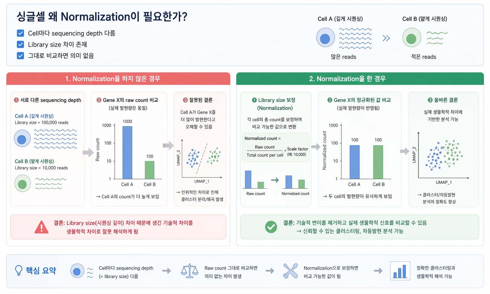
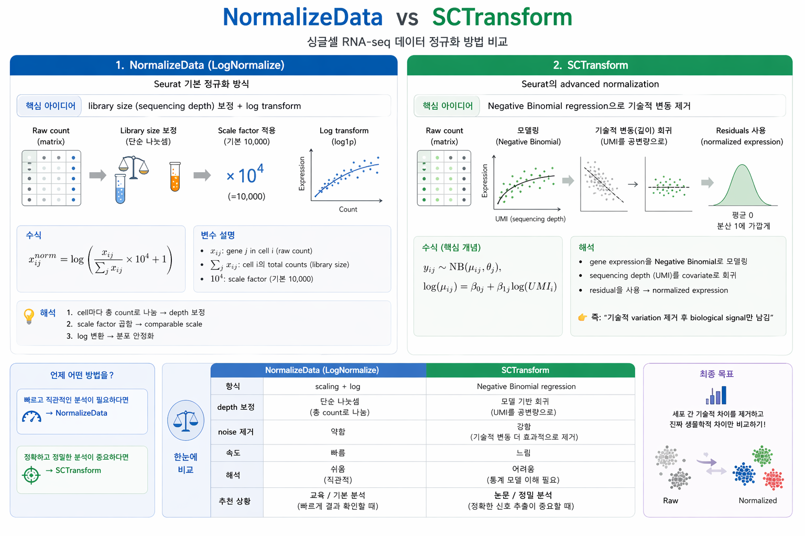
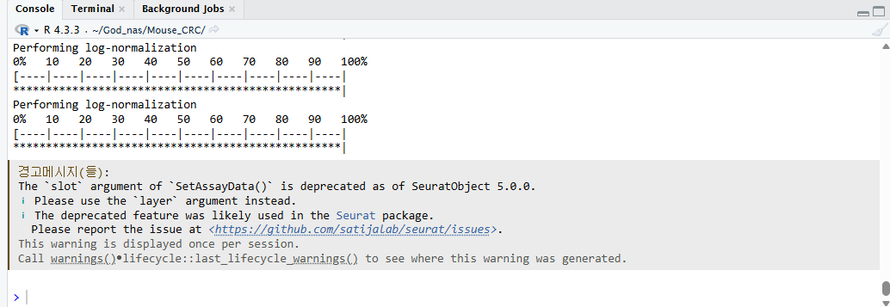
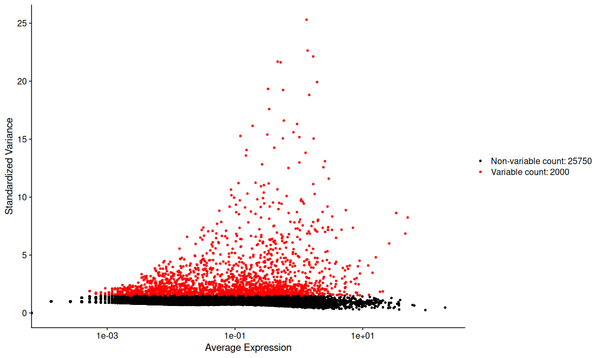
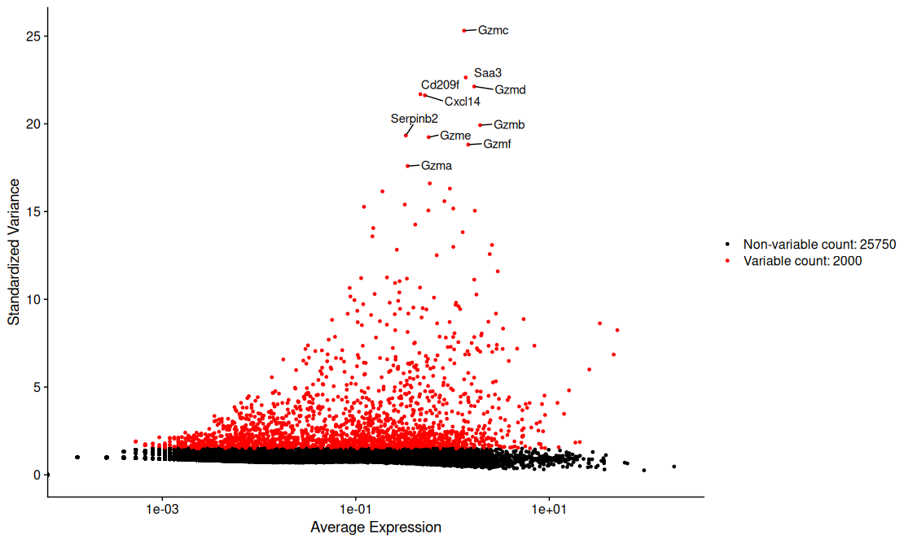

QC를 통해 low-quality cell을 제거한 뒤에는, 세포 간 sequencing depth 차이를 보정하고 downstream 분석에 중요한 variable genes를 선택하는 단계가 필요합니다. 이 단계는 PCA, clustering, annotation의 품질을 결정하는 핵심 과정입니다.
Single-cell RNA-seq에서는 각 세포마다 sequencing depth와 library size가 다를 수 있습니다. 따라서 raw count를 그대로 비교하면, 실제 biological difference가 아니라 단순히 더 많이 시퀀싱된 세포가 더 높은 발현을 가진 것처럼 보일 수 있습니다.
Normalization의 목적은 이러한 기술적 차이를 줄이고, 세포 간 발현값을 비교 가능한 형태로 변환하는 것입니다. 즉, normalization을 통해 실제 biological signal에 더 가깝게 데이터를 해석할 수 있습니다.

sequencing depth와 library size 차이를 보정하지 않으면 raw count 비교가 왜곡될 수 있습니다.
Seurat에서 가장 자주 사용하는 정규화 방법은 NormalizeData()와
SCTransform()입니다.
NormalizeData()는 library size를 보정한 뒤 log transform을 적용하는
직관적이고 빠른 방법이며, 교육용 또는 기본 분석에 많이 사용됩니다.
반면 SCTransform()은 gene expression을 Negative Binomial model로 다루고,
sequencing depth와 같은 기술적 변동을 회귀 기반으로 보정합니다.
일반적으로 더 정교한 정규화 방법으로 여겨지지만, 계산량이 많고 개념적으로 더 복잡합니다.

NormalizeData는 빠르고 직관적인 방식이며, SCTransform은 더 정교한 모델 기반 정규화 방법입니다.
| 항목 | NormalizeData | SCTransform |
|---|---|---|
| 핵심 방식 | library size 보정 + log transform | Negative Binomial regression 기반 정규화 |
| 장점 | 빠르고 직관적이며 교육용으로 적합 | 기술적 변동 제거 효과가 크고 더 정교함 |
| 단점 | noise 제거가 제한적일 수 있음 | 계산량이 많고 개념적으로 복잡함 |
| 추천 상황 | 기본 분석, 빠른 확인, 교육 목적 | 정밀 분석, 논문 수준 분석 |
NormalizeData()를 사용해 정규화 개념을 익히고,
SCTransform()은 이후 고급 단계에서 소개합니다.
모든 유전자를 그대로 downstream 분석에 사용하면, 변화가 거의 없는 housekeeping genes나 noise가 많은 유전자들이 함께 포함되어 PCA와 clustering 결과를 흐릴 수 있습니다.
따라서 세포 간 변동성이 큰 유전자들, 즉 highly variable genes (HVGs)를 선택하여 이후 차원 축소와 clustering에 사용하는 것이 일반적입니다. 이 과정은 biological signal을 더 잘 드러내고 계산 효율도 높여줍니다.
본 실습에서는 6개 샘플 각각에 대해 NormalizeData()를 적용합니다.
sample_list <- lapply(sample_list, function(obj) {
NormalizeData(
obj,
normalization.method = "LogNormalize",
scale.factor = 10000
)
})

NormalizeData 실행 후 나타날 수 있는 Seurat v5 lifecycle warning 예시
SeuratObject 5.0부터 assay 내부 데이터를 지정할 때 기존의 slot 대신
layer 사용이 권장됩니다. 화면의 메시지는 사용자가 작성한
NormalizeData() 코드가 잘못됐다는 뜻이 아니라,
실행 과정에서 Seurat 내부 함수가 이전 방식의 slot 인수를 호출했다는
lifecycle 안내입니다.
Performing log-normalization이 100%까지 완료되고 R prompt(>)가 다시 나타났다면 정규화는 정상적으로 끝난 것입니다.
다만 정규화가 중단되거나 실제 error가 함께 발생한다면
교육생이 직접 패키지를 설치하거나 업데이트하지 말고, 실습 담당자에게
Seurat와 SeuratObject의 버전 호환성 확인을 요청합니다.
# 설치된 버전 확인
packageVersion("Seurat")
packageVersion("SeuratObject")
# 최근 warning 확인
warnings()
# 정규화된 data layer가 생성되었는지 확인
Layers(sample_list[[1]][["RNA"]])
Layers() 결과에 counts와 data가 표시되면,
원시 count는 counts layer에 유지되고 LogNormalize 결과는
data layer에 정상적으로 저장된 것입니다.
정규화 후에는 각 샘플에서 변동성이 큰 유전자들을 선택합니다.
sample_list <- lapply(sample_list, function(obj) {
FindVariableFeatures(
obj,
selection.method = "vst",
nfeatures = 2000
)
})
아래는 ND1 샘플에서 variable feature를 확인하는 예시입니다.
VariableFeaturePlot(sample_list[[1]])

ND1 샘플의 variable feature plot. 빨간색 점은 선택된 2,000개 variable gene, 검은색 점은 선택되지 않은 유전자를 나타냅니다.
상위 variable genes를 함께 표시하면 어떤 유전자들이 선택되었는지 더 쉽게 확인할 수 있습니다.
top10 <- head(VariableFeatures(sample_list[[1]]), 10)
LabelPoints(
plot = VariableFeaturePlot(sample_list[[1]]),
points = top10,
repel = TRUE
)

ND1 샘플의 상위 10개 variable gene을 표시한 결과
VariableFeatures()는 변동성이 큰 순서로 선택된 유전자 이름을 반환합니다.
head(..., 10)으로 상위 10개를 선택하고 LabelPoints()로 위치를 표시합니다.
그림에서는 granzyme 계열 유전자 등이 높은 변동성을 보이는데, 이는 특정 면역세포 집단의
발현 차이가 크다는 가능성을 보여줍니다. 다만 이 단계만으로 생물학적 결론을 내리기보다는
이후 cluster와 cell type annotation 결과를 함께 확인해야 합니다.
실제 분석에서는 각 샘플마다 variable features의 분포가 다를 수 있으므로, 대표 샘플뿐 아니라 전체 샘플을 점검하는 것이 좋습니다.
for (nm in names(sample_list)) {
print(
VariableFeaturePlot(sample_list[[nm]]) + ggtitle(nm)
)
}
이후 integration 또는 clustering 단계에서는 정규화와 variable feature selection이 완료된
sample_list만 사용합니다. 따라서 Step 1부터 생성된 개별 sample 객체와
QC 요약표, plotting용 임시 객체는 제거하여 메모리를 정리합니다.
names(sample_list)
head(VariableFeatures(sample_list[[1]]))
# sample_list를 제외한 Global Environment의 객체 제거
rm(
list = setdiff(
ls(envir = .GlobalEnv),
"sample_list"
),
envir = .GlobalEnv
)
# 사용하지 않는 메모리 회수 요청
gc()
# sample_list만 남았는지 확인
ls(envir = .GlobalEnv)
sample_list를 제외한
모든 객체를 제거합니다. 같은 R session에서 보존해야 할 다른 분석 객체가 있다면 먼저 확인해야 합니다.
로드된 패키지는 해제하지 않으므로 Step 4 분석은 그대로 이어서 실행할 수 있습니다.
아래 코드는 Step 2에서 QC와 doublet 제거를 마친 sample_list를 이어받아
LogNormalize, variable feature selection, 결과 확인 및 환경 정리까지 수행합니다.
패키지는 Step 1에서 이미 불러왔으므로 별도의 library() 호출은 포함하지 않습니다.
# ============================================================
# Step 03. Normalization and variable feature selection
# Step 02에서 QC를 마친 sample_list를 이어서 사용
# ============================================================
# 1. 각 sample을 LogNormalize 방식으로 정규화
sample_list <- lapply(sample_list, function(obj) {
NormalizeData(
obj,
normalization.method = "LogNormalize",
scale.factor = 10000
)
})
# 2. 정규화된 data layer 확인
Layers(sample_list[[1]][["RNA"]])
# 3. 각 sample에서 variable feature 2,000개 선택
sample_list <- lapply(sample_list, function(obj) {
FindVariableFeatures(
obj,
selection.method = "vst",
nfeatures = 2000
)
})
# 4. 샘플별 variable feature 개수 확인
variable_feature_count <- sapply(
sample_list,
function(obj) length(VariableFeatures(obj))
)
variable_feature_count
# 5. ND1 variable feature 분포 확인
VariableFeaturePlot(sample_list[[1]])
# 6. ND1의 상위 10개 variable gene 표시
top10 <- head(
VariableFeatures(sample_list[[1]]),
10
)
LabelPoints(
plot = VariableFeaturePlot(sample_list[[1]]),
points = top10,
repel = TRUE
)
# 7. 모든 sample의 variable feature 분포 확인
for (nm in names(sample_list)) {
print(
VariableFeaturePlot(sample_list[[nm]]) +
ggtitle(nm)
)
}
# 8. Step 04로 전달할 객체의 상태 확인
names(sample_list)
sapply(sample_list, ncol)
sapply(
sample_list,
function(obj) length(VariableFeatures(obj))
)
# 9. sample_list를 제외한 불필요한 환경 객체 제거
rm(
list = setdiff(
ls(envir = .GlobalEnv),
"sample_list"
),
envir = .GlobalEnv
)
# 10. 사용하지 않는 메모리 회수 요청
gc()
# 11. sample_list만 남았는지 확인
ls(envir = .GlobalEnv)
Layers() 결과에서 RNA assay의 counts와 data를 확인합니다.ls() 결과에는 sample_list만 출력되어야 합니다.nfeatures = 1000과 nfeatures = 2000의 차이가 무엇인지 설명해 보세요.counts layer를 보존하는 이유를 설명해 보세요.NormalizeData()는 빠르고 직관적이며, SCTransform()은 더 정교한 모델 기반 방법입니다.